Guide : boutons et interactions
Cette courte page explique le rôle des boutons et commandes présents dans la présentation.
- ◀ Précédent : revient à la diapositive précédente.
- Suivant ▶ : avance à la diapositive suivante.
- Plein écran : active/désactive le mode plein écran du navigateur.
- Clique sur une image : zoom léger. Une seconde action ferme le zoom.
- Télécharger / Copier (barre d'outils) : télécharge ou copie l'image affichée.
- Galerie (slide Horaires) : clique pour centrer une image ; appuie de nouveau pour quitter.
- Bouton ⬇ / ⬆ : défile la galerie d'horaires vers le bas/haut.
- Touche Échap : ferme tout zoom ou panneau ouvert.
Cliquez sur Suivant ▶ pour commencer la présentation.
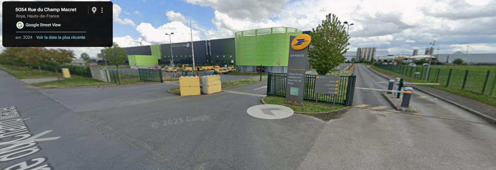
Où est La Poste ?
La Poste se situe au 200 rue du Champ Macret à Roye.
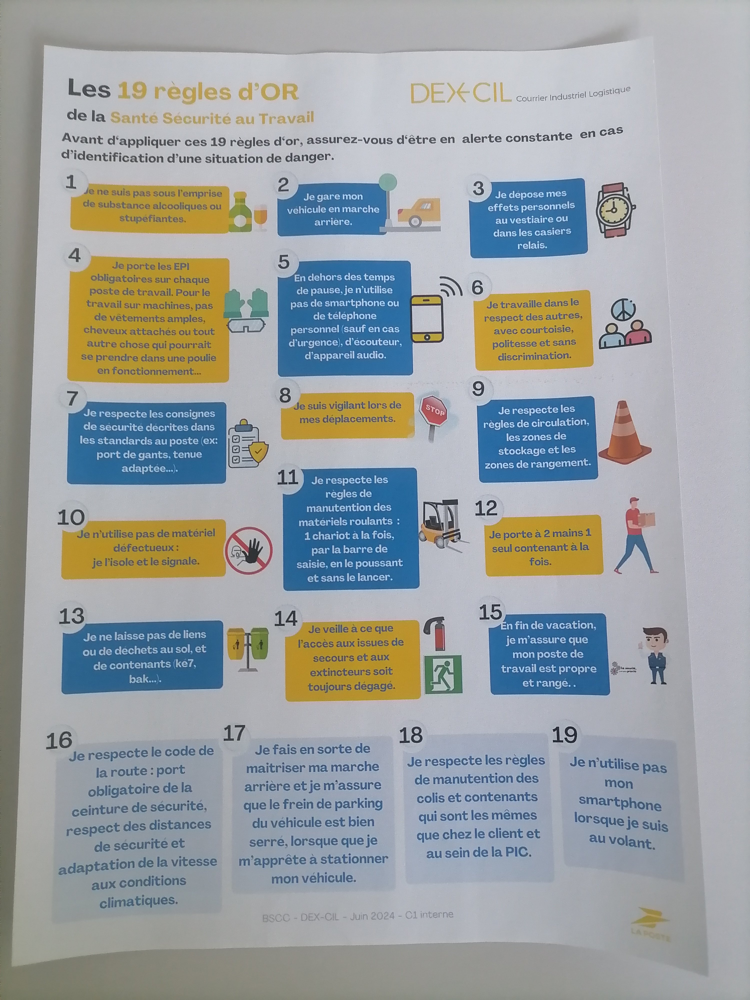
Les 19 règles d'or
Elles permettent le bon fonctionnement de l'entreprise.
Horaires collectifs Entrepôt LOG’ISSIMO ROYE
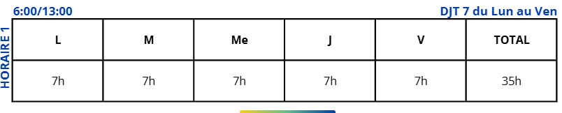

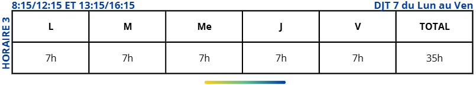
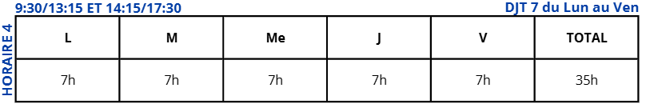

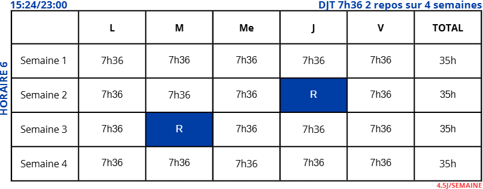
Le plan de La Poste
Permet de situer chaque emplacement.
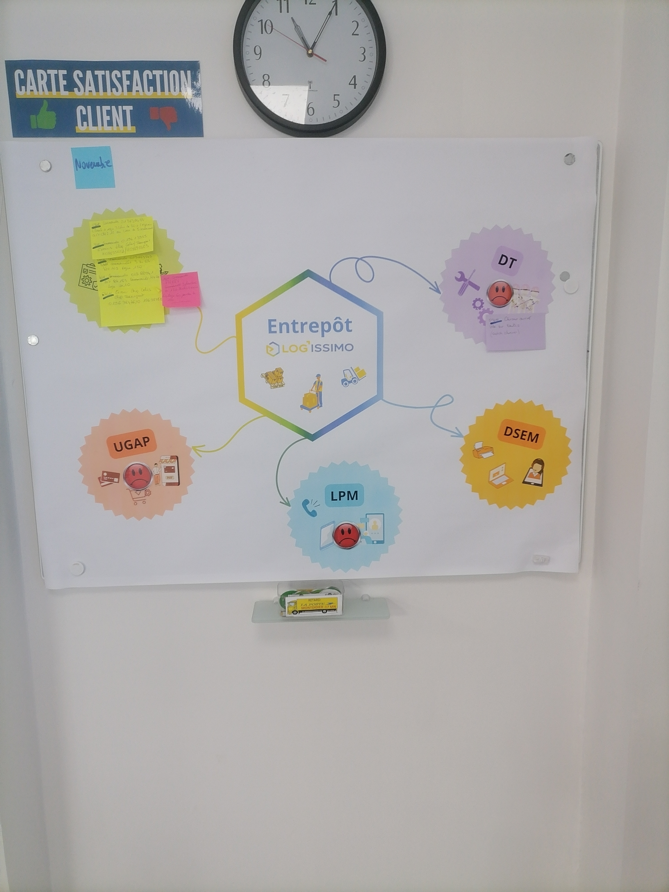
Ce sont les principaux clients avec lesquels La Poste travaille.
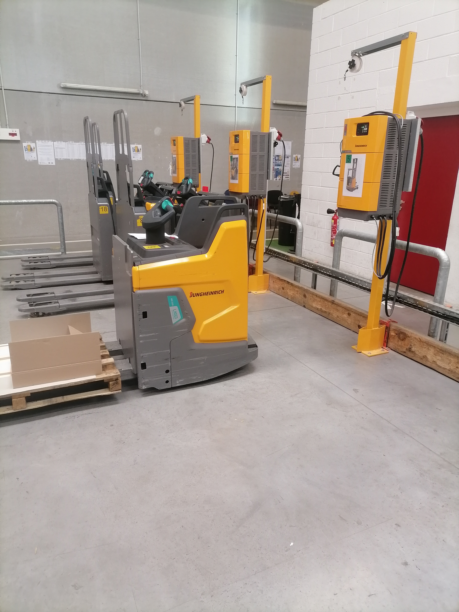
Qu'est-ce ?
Ce sont des transpalettes.
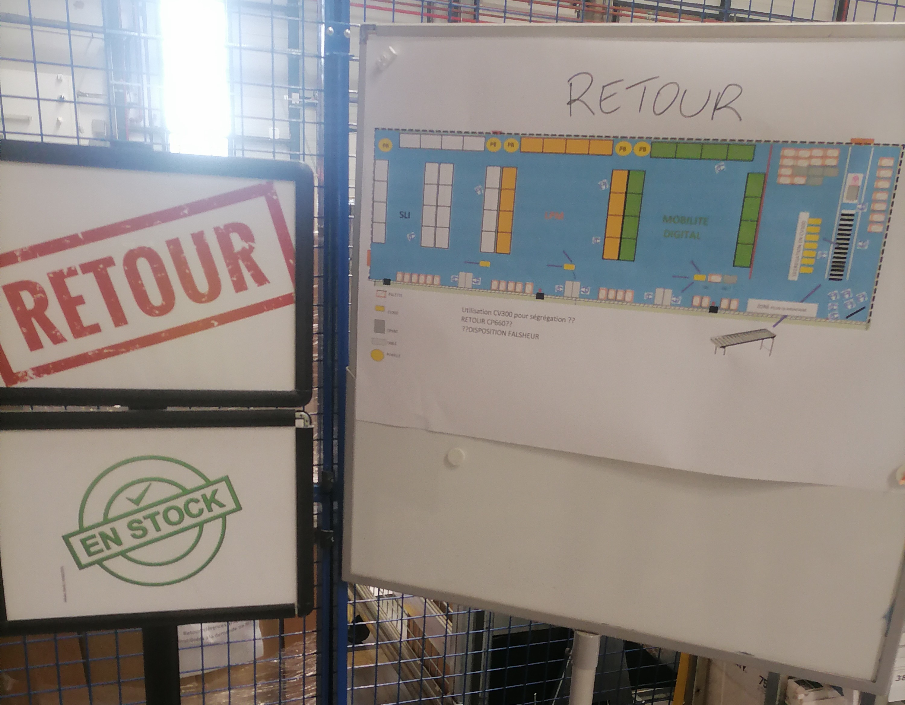
Qu'est-ce ?
Chaque pièce, objet ou autre ira à l'endroit indiqué.
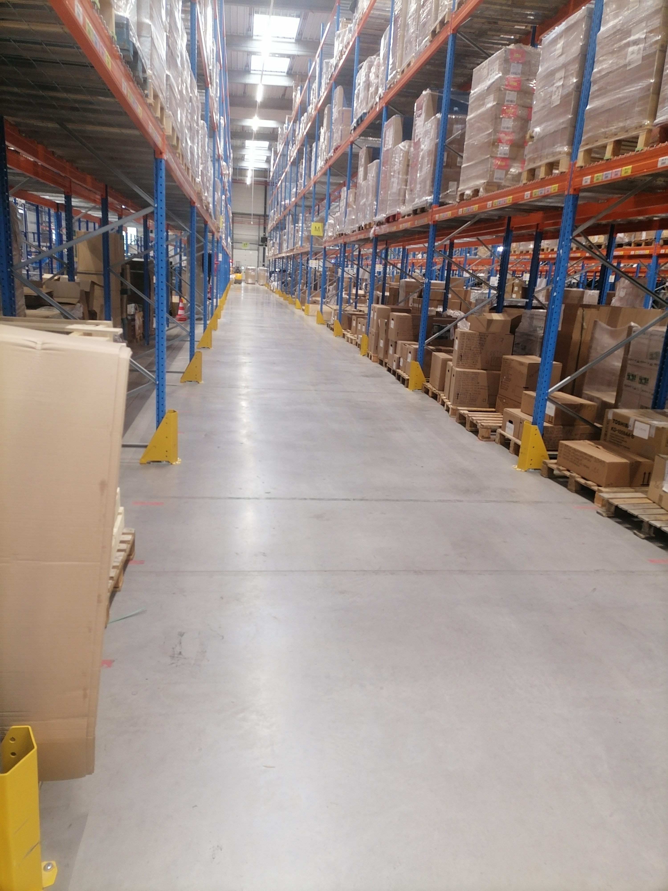
Les racks
Ce sont des racks de palettes.
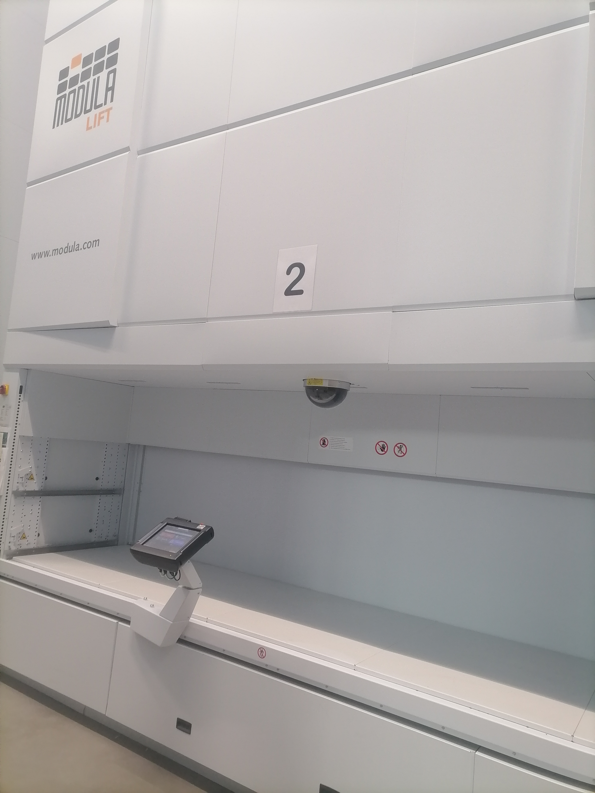
Qu'es
C'est un modula lift